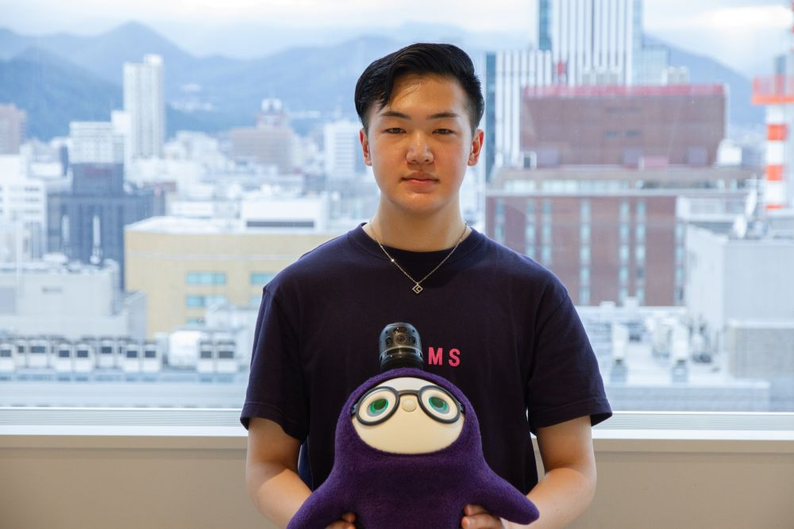
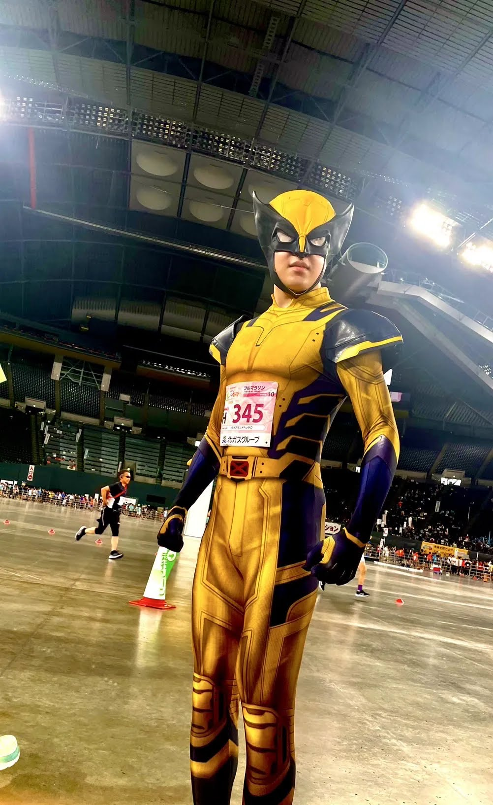
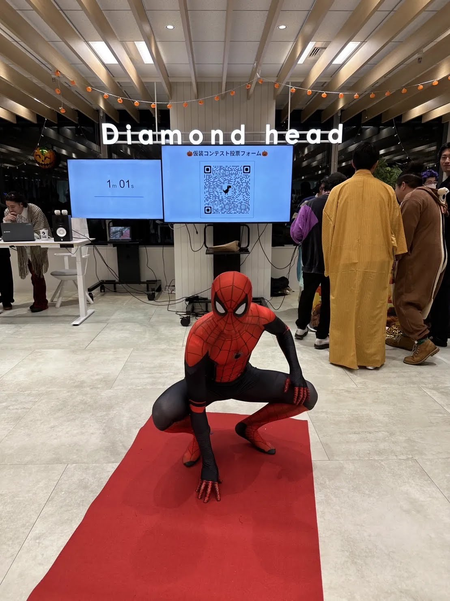
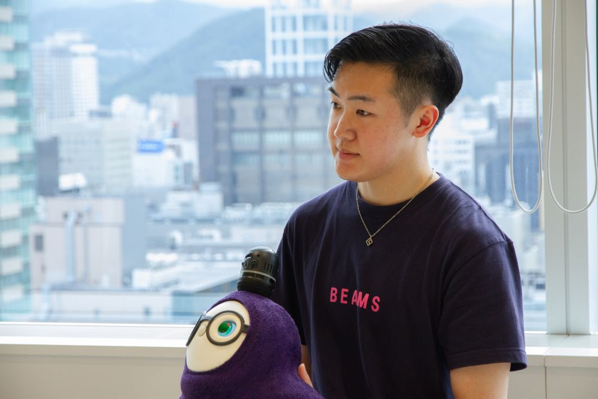

AI時代に求められるのは“ビジネス読解力”。全社システムを構築した若手エンジニアの軌跡

佐藤 晃大
大学4年時にダイアモンドヘッドの内定者インターンに参加し、全社横断の工数管理システムの開発を担当。現在はシステムサービス部門にて、社内外の業務システムの要件定義から開発運用まで携わっている。アメコミを愛し、社内イベントではスパイダーマンのコスプレで参加する一面も。
大学4年時の内定者インターンとして入社後、全社横断の工数管理システムの新規構築を担当した佐藤さん。現在はシステムサービス部門で、社内外の業務システム開発に携わっています。開発を通して学んだのは、ただコードを書くことではなく、現場の業務フローを理解し「全体最適」を設計する重要性でした。AI技術が進化する中、エンジニアにとって本当に必要な「ビジネスを構造化する力」について話を聞きました。
1. 業務システム開発と「遊び心」
佐藤：現在は8名ほどのチームで、某ファッションブランド様向けの業務システム構築に携わっています。クライアント独自の業務フローを理解し、それを効率的なシステムへ落とし込むため、要件定義から実装までを行っています。
また、それと並行して、私がインターン時代から開発に関わってきた社内の「実績工数管理システム」や「管理会計システム」の保守運用も担当しています。
佐藤：3歳ごろからずっと好きですね。当時、母に映画へ連れて行ってもらったのがきっかけです。社内イベントではスパイダーマンやキャプテン・アメリカなどの自前スーツで参加しています。
実は私が開発した社内システムも、開発当初に名前が決まっていなかった時、私がたまたま着ていたアメコミTシャツから開発コードネームが付けられたんです。ダイアモンドヘッドには、そういった個人の趣味や少しの「遊び心」を許容してくれるカルチャーがあると感じています。


2. 「作る」前に「業務」を知る
佐藤：大学4年の春頃に内々定をいただき、「来年の春から少しでも即戦力として働けるようになりたい」という目標があったため参加しました。新しい技術を積極的に取り入れており、近年のAI技術の進化に伴って働き方が変わっていく環境に惹かれました。
佐藤：はい。「新規構築だから業務に入りやすいだろう」ということでアサインされたのですが、結果的に私一人で開発を進めることになりました。
当社のプロダクトでメインに使われている『Django』（PythonのWebフレームワーク）の学習も兼ねていたため、最初は「どうコードを書くか」という技術的な視点ばかりに目がいっていました。しかし、実際に進めていくと「動くものを作ること」と「運用に乗るものを作ること」は全くの別物だと気づきました。
佐藤：例えば、社内の工数管理一つをとっても、部署ごとに概念が全く違います。システム＆サービス部は「かかった時間」だけを管理しますが、スタジオ部門になると「時間＋撮影カット数などの数字」の概念が入ってきます。
単に入力チェックを厳しくしてシステム化するだけでは、現場の入力負荷が上がり、使われないシステムになってしまいます。言われた通りにコードを書くのではなく、現場の業務フローや独自のルールを理解し、UIを逆算して「全体の仕組み」をデザインしなければならないと学びました。
「動くもの」と「運用に乗るもの」は全くの別物。
現場の業務フローを紐解き、
仕組み全体をデザインする視点が必要でした。
3. 現場の要望をシステム要件に「翻訳」する
佐藤：はい。最大の課題は、私自身に管理会計の知識が全くなかったことでした。各部門がそれぞれどのようなルールでお金を管理し、運用しているのか。専門用語から現場の業務フローまで初めて触れることばかりで、当初はどうシステムへ落とし込めばいいのか苦労しました。
佐藤：自分だけで抱え込まず、上層部や各部門の担当者に自らヒアリングへ行きました。わからないことは素直に質問し、「経営陣は最終的に数字をどう見たいのか」「現場の人たちは今どうやって入力しているのか」を地道に紐解いていったんです。
システムを作る以前に、まずは会社のビジネスやお金の動きを理解し、現場の要望をシステム要件へと「翻訳」していく。この経験を通して、技術力だけでなく、周囲に確認しながら業務の解像度を上げていくコミュニケーションの大切さを実感しています。

4. AI時代のエンジニアに求められる視点
佐藤：私が入社した3年前と現在では、開発を取り巻く環境が変わりました。今はAIを使えばコード生成ができ、開発を時短できる時代です。だからこそ、「コードを書く力」だけでは強みになりにくいと感じています。
AI時代にエンジニアが担うべき重要な役割は、クライアントの複雑な業務フローを読み解く「仕様の読解力」と、それをシステムとしてどう構築すべきか見極める「判断力」です。それが、これからのエンジニアの面白さであり、ビジネスを推進していく上で大事な役割になっていくのかなと思っています。
佐藤：コードを書くこと自体を目的とするのではなく、ビジネスの課題解決を考えたいエンジニアにとって、ここは成長できる環境だと思います。若手のうちから裁量を任され、失敗を恐れずに挑戦できるカルチャーがあります。
エンジニアリングは「チームスポーツ」だと考えています。周囲と協力しながらものづくりを楽しめる方と、ぜひ一緒にお仕事をしたいです。